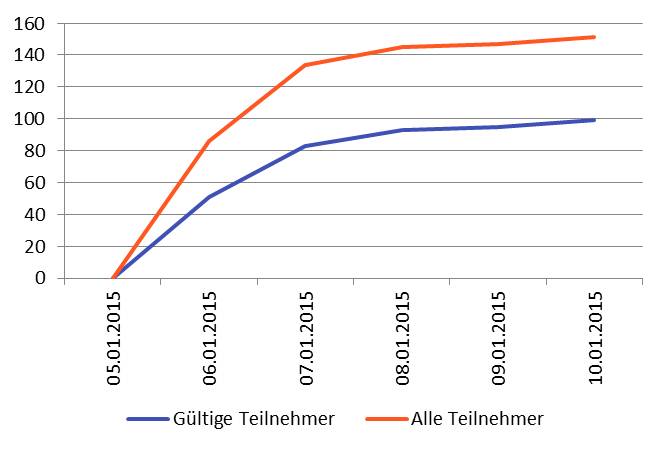

Ein Projekt des Kurses WWI2012F
5. Semester Duale Hochschule Baden-Württemberg Stuttgart
Abschlusspräsentation am 02.02.2015
Marketing

Quelle: http://www.professionalacademy.com/media/images/social-media-marketing-spout.jpg
Zielsetzung
Unterstützungsfunktion
- Datenbeschaffung für Inbetriebnahme
- Klärung rechtlicher Fragen
- Erarbeitung Marketingkonzept und Marketingstrategie
Methodik

Arbeitspakete
- Planung und Konzept
- Datenbeschaffung
- Name und Slogan
- Rechtliche Aspekte
- Erstellung, Konzeption und Durchführung Umfrage I
- Erstellung, Konzeption und Durchführung Umfrage II
- Social Media Marketingkonzept
- Klassische Medien Marketingkonzept
2. Datenbeschaffung
- Definition Format der Daten
- Datensammlung
- Datenpflege
- Bilderbeschaffung
3. Name und Slogan
OR DIE TRYIN'
4. Rechtliche Aspekte
- Impressum
- Datenschutz und Copyright
- Anzeigeanforderungen Bewertungsportal
5. Erstellung, Konzeption und Durchführung von Umfrage I
- Umfrage zur Durchführung einer Marktanalyse
- Impulse zur Erstellung der Web-Applikationen
- Ergebnisse bei den Marketingstrategien beachten
5. Erstellung, Konzeption und Durchführung von Umfrage I

6. Erstellung, Konzeption und Durchführung von Umfrage II
- Umfrage zur Überprüfung der bisherigen Zwischenergebnisse
- Design und Funktionen der Web-Applikation
- Feedback zu umgesetzten Funktionen und dem Design
6. Erstellung, Konzeption und Durchführung von Umfrage II

7. Social Media Marketingkonzept
8. Klassische Medien Marketingkonzept
- Umfrageergebnisse dienen als Grundlage
- Produktpolitik
- Preispolitik
- Vertriebspolitik
- Kommunikationspolitik
- Über Umfragen
- klassische Mediawerbung:
- Werbung in Printmedien
- Radiowerbung
- Außenwerbung
- Werbeartikel
Layout Flyer/Plakat
ENDE
Vertical Slides
Slides can be nested inside of each other.
Use the Space key to navigate through all slides.
Basement Level 1
Nested slides are useful for adding additional detail underneath a high level horizontal slide.
Basement Level 2
That's it, time to go back up.
Fragments
Hit the next arrow...
... to step through ...
... a fragmented slide.
Fragment Styles
There's different types of fragments, like:
grow
shrink
roll-in
fade-out
current-visible
highlight-red
highlight-blue
Slide Backgrounds
Set data-background="#dddddd" on a slide to change the background color. All CSS color formats are supported.
Image Backgrounds
<section data-background="image.png">Tiled Backgrounds
<section data-background="image.png" data-background-repeat="repeat" data-background-size="100px">Video Backgrounds
<section data-background-video="video.mp4,video.webm">Background Transitions
Different background transitions are available via the backgroundTransition option. This one's called "zoom".
Reveal.configure({ backgroundTransition: 'zoom' })Background Transitions
You can override background transitions per-slide.
<section data-background-transition="zoom">Code Example
Marvelous List
- No order here
- Or here
- Or here
- Or here
Fantastic Ordered List
- One is smaller than...
- Two is smaller than...
- Three!
Tabular Tables
| Item | Value | Quantity |
|---|---|---|
| Apples | $1 | 7 |
| Lemonade | $2 | 18 |
| Bread | $3 | 2 |
Clever Quotes
These guys come in two forms, inline:
“The nice thing about standards is that there are so many to choose from”
and block:
“For years there has been a theory that millions of monkeys typing at random on millions of typewriters would reproduce the entire works of Shakespeare. The Internet has proven this theory to be untrue.”
Intergalactic Interconnections
You can link between slides internally, like this.
Global State
Set data-state="something" on a slide and "something"
will be added as a class to the document element when the slide is open. This lets you
apply broader style changes, like switching the page background.
State Events
Additionally custom events can be triggered on a per slide basis by binding to the data-state name.
Reveal.addEventListener( 'customevent', function() {
console.log( '"customevent" has fired' );
} );
Take a Moment
Press B or . on your keyboard to pause the presentation. This is helpful when you're on stage and want to take distracting slides off the screen.